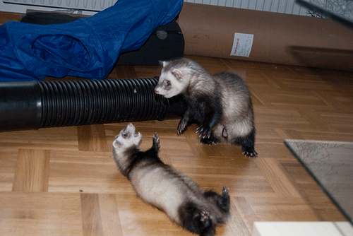

When I first heard about ferrets I was really too young to know about what they were. I just thought they were cute and fascinating. In 1987, several years after the movie originally came out, I watched a movie called “The Beastmaster”. In that movie there were these long fury animals that stole things from other people. I thought they were so cute and funny. Other movies that had ferrets in them were the movies “Kindergarten Cop”, and "Along came Polly". I knew then I had to have a ferret. A few years went by before I thought about getting a ferret. That is until I saw them again in the pet store. I saved my money and finally got one. She was six weeks old, tiny and adorable. I loved her instantly. I had not done much research until after I got her.
The media has painted an unfriendly portrait of ferrets. They have said that ferrets are aggressive and untrainable and dangerous, especially around infants and small children. This information is UNTRUE! Ferrets, like any animal as a pet, need love and care and can be trained with much success. No animal should be left alone with an infant and all children must be supervised with any and all pets (cat, dog, hampster, etc.) not just ferrets.
Over the years I have owned 3 ferrets and each one has been more lovable and entertaining than the last. The one I currently own is now 5, almost 6, years old and very energetic. Now that I am getting older I do not have a lot of time to train a new ferret but there are older ferrets that still need a home and those are those I gear towards.
You can go to lovethatpet.com to check out some facts and how to care for ferrets!